＊ ＊ ＊
CeremoniaIglesia del Carmen
Antequera, Málaga · 12:00 h
Nos casamos
Nada nos haría más ilusión que celebrar este día con vosotros.
¡Te esperamos!
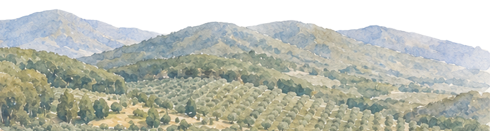
＊ ＊ ＊
CeremoniaAntequera, Málaga · 12:00 h
＊ ＊ ＊
CelebraciónCóctel, comida y fiesta a partir de las 14:00 h
Así viviremos el día
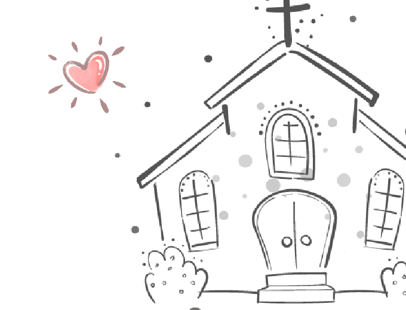
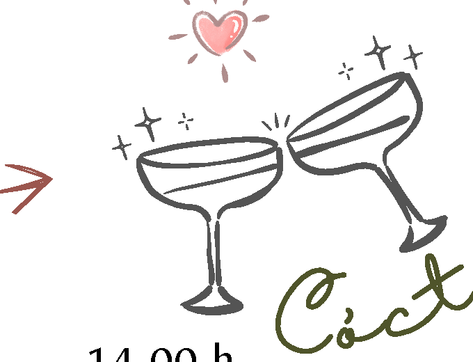
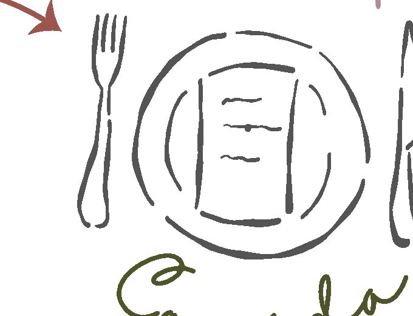
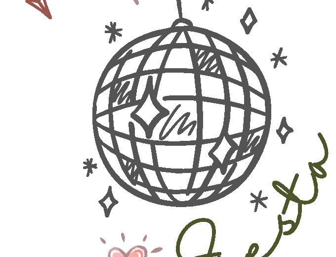
Todo ocurrirá en la Finca El Romeral, donde celebraremos juntos hasta que el cuerpo aguante.
Un poquito de nosotros
Nos gusta viajar, perdernos por ciudades nuevas y volver siempre con una foto de los dos de fondo. Aquí van algunos de los sitios que ya hemos compartido, antes de compartir este.
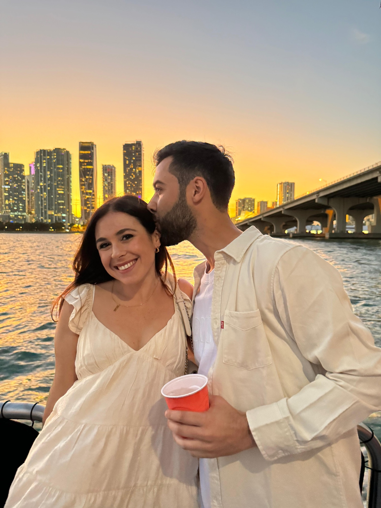
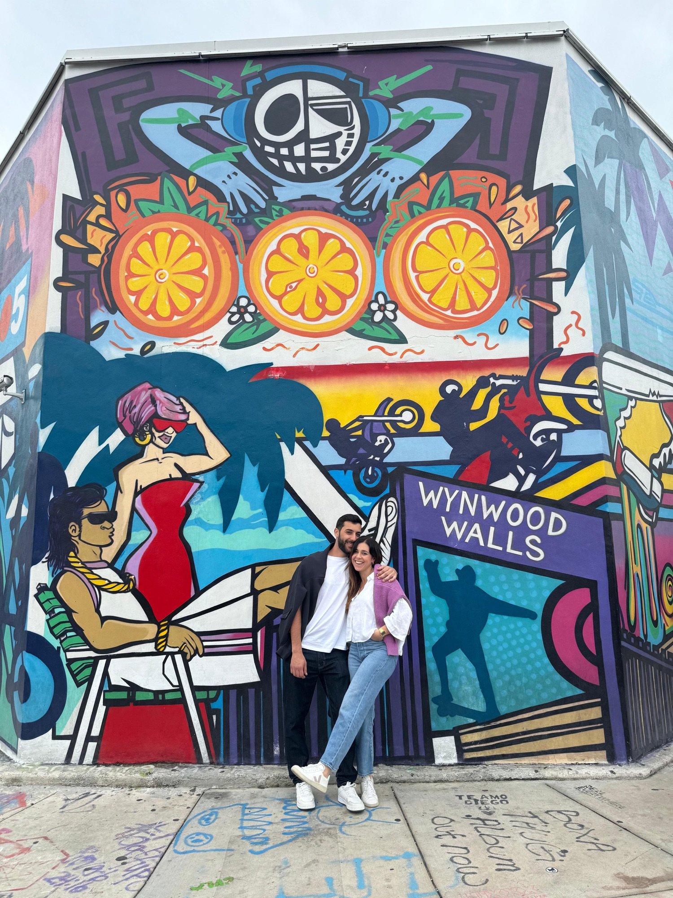
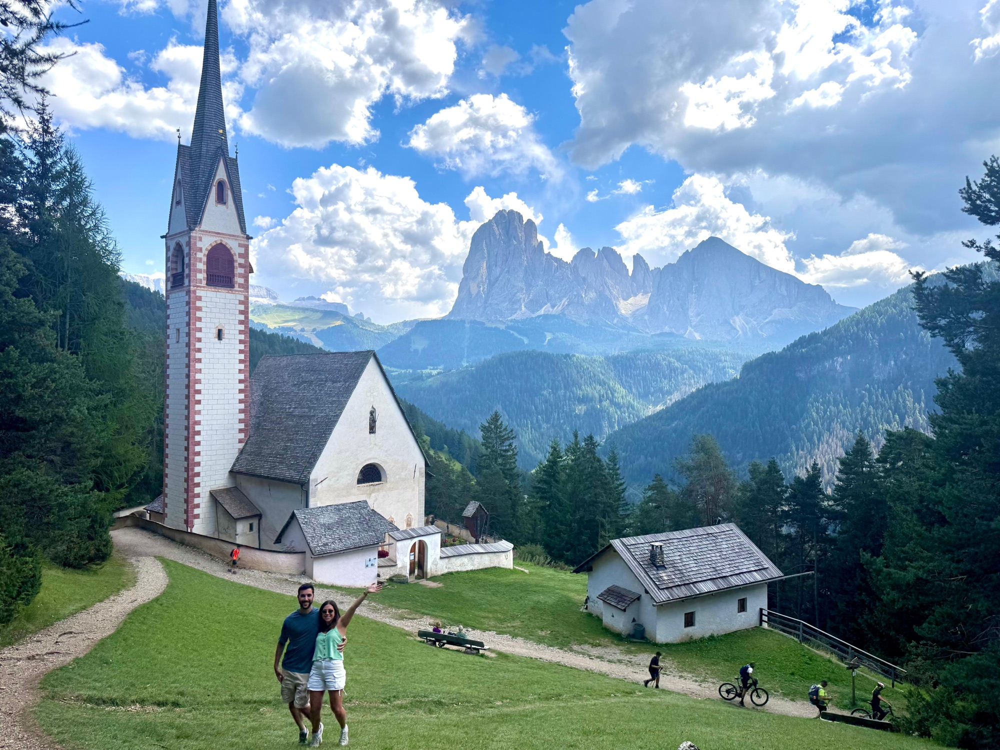
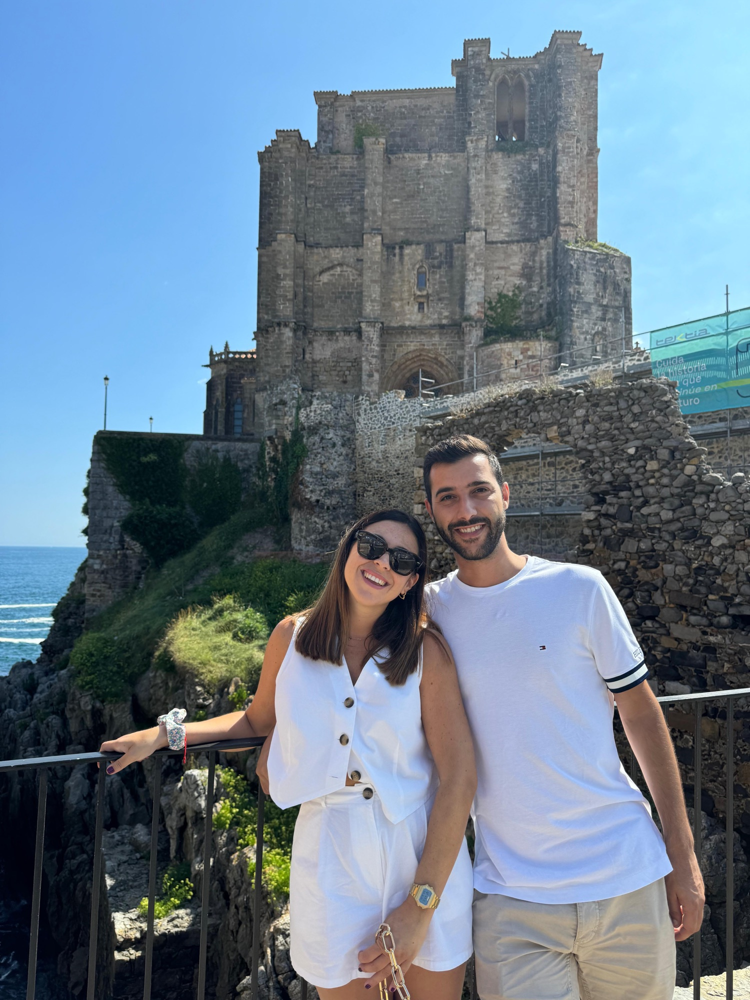
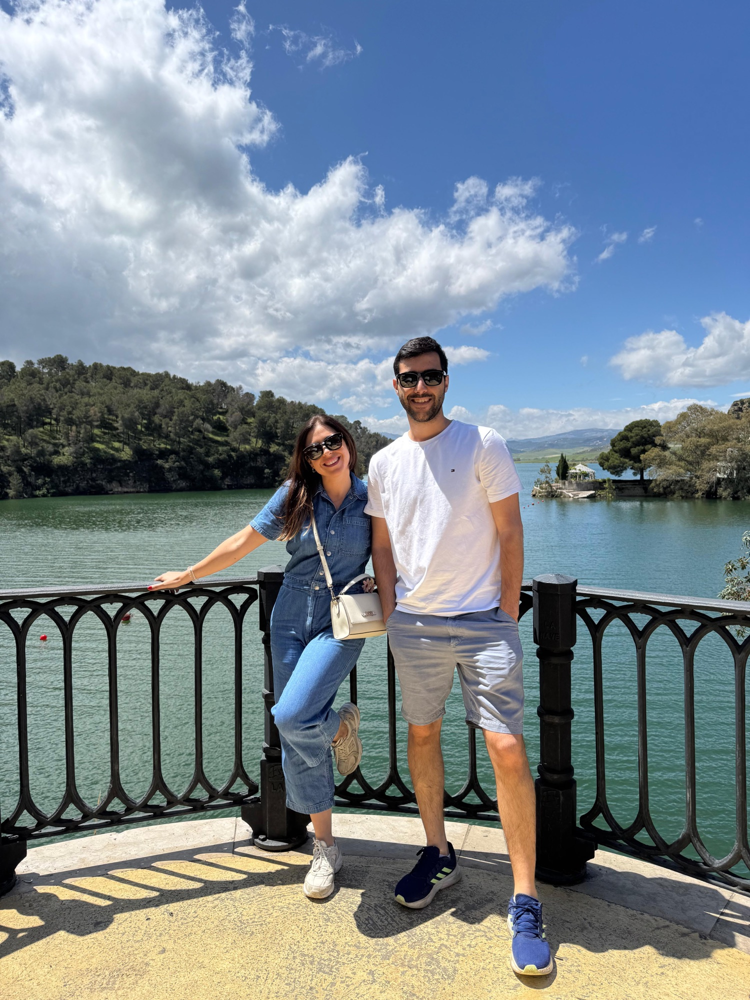
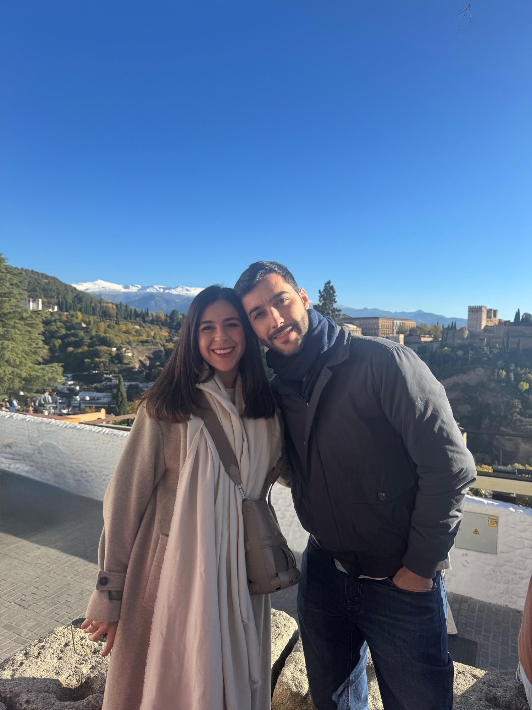
La pedida
Entre los cerezos en flor, Luis se arrodilló y María dijo que sí. Meses después, seguimos celebrándolo — ahora con todos vosotros.
La finca donde celebraremos la boda, entre olivos y naranjos. Este vídeo es de nuestro paso por la Feria de Bodas de El Romeral, cuando decidimos que ese sería el sitio.
Tenéis preguntas, tenemos respuestas
Estamos terminando de decidirlo — en cuanto lo tengamos claro lo añadimos aquí.
Pendiente de confirmarAñadiremos aquí la información sobre niños, menús especiales y cualquier detalle para familias en cuanto lo tengamos cerrado con la finca.
Pendiente de confirmarLa boda es en Antequera (Málaga). Muy pronto incluiremos recomendaciones de hoteles, cómo llegar a la Iglesia del Carmen y a la Finca El Romeral, y opciones de transporte entre ambas.
Pendiente de confirmar¿Nos acompañáis? Por favor, confirmad vuestra asistencia antes del 1 de septiembre de 2026. Muy pronto habilitaremos aquí mismo un formulario para confirmar en un clic.
Vuestra presencia significa muchísimo para nosotros. Si queréis tener un detalle con nosotros, más adelante compartiremos aquí cómo hacerlo.